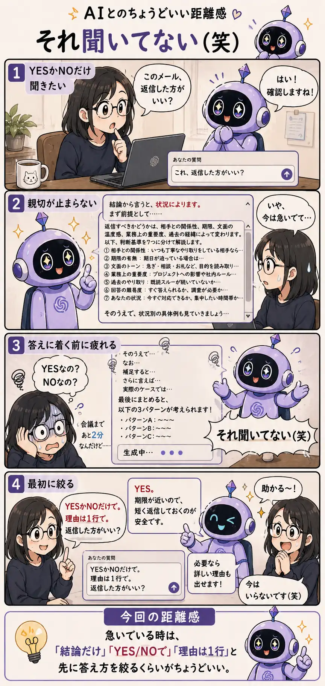

#025
それ聞いてない（笑）
答えは合ってる。でも、そこまで聞いてない。

メモ
AIに「これ、返信した方がいい？」みたいな質問をすることがあります。
こちらの気持ちとしては、YESかNOだけ知りたい。急いでいるし、今は深い分析を求めていない。とりあえず、出すべきか、出さなくていいかだけ判断したい。
でもAIは、そこで急に親切モードに入ることがあります。
「結論から言うと、状況によります。まず前提として、相手との関係性、期限、文面の温度感、業務上の重要度、過去の経緯を確認しましょう」
いや、正しい。たぶん正しい。ちゃんと考えてくれているのも分かる。
でも、今それを全部読みたいわけじゃない。
しかもAIの回答は、前提、判断基準、例外、注意点、補足、最後にまとめ、みたいにどんどん伸びていくことがあります。読んでいるうちに、最初に何を聞いたのか分からなくなる。
人間同士なら、急いでいる相手には「返した方がいいよ」くらいで済ませることもあります。でもAIには、その空気が毎回伝わるとは限りません。AIからすると、「理由も添えた方が親切」「例外も説明した方が安全」と判断しているのかもしれない。
そんな時は、最初に答え方を絞るのが効きます。
「YESかNOだけで答えて」「理由は1行で」「結論だけ先に教えて」。このくらい言っておくと、AIの親切がちょうどいいサイズに収まりやすくなります。
長文解説が悪いわけではありません。じっくり考えたい時には、むしろありがたい。でも、急いでいる時の長文は、たまに親切というより重い。
AIに聞く時は、答えの中身だけでなく、答え方も指定していい。そう思うと、少し扱いやすくなります。
今回の距離感
急いでいる時は、「結論だけ」「YES/NOで」「理由は1行」と先に答え方を絞るくらいがちょうどいい。